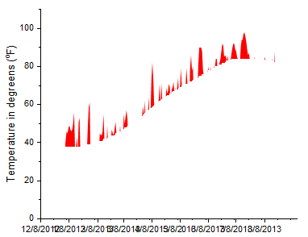

複雑な塗りつぶし
complicated-fill-area
概要

必要なOriginのバージョン: 9.1 SR0以降
学習する項目
- 2つの異なる色で曲線間を塗りつぶします。
- 作図の詳細を使用して複雑なグラフを作成します。
積み上げ塗りつぶしグラフの作成手順
このチュートリアルは、チュートリアルデータプロジェクト（<Origin EXE フォルダ>\Samples\TutorialData.opj）と関連しています。このチュートリアルではために多数の段階を経て、グラフを作成します。このチュートリアルはOriginの基本的な使い方ではないことに留意してください。
- チュートリアルデータプロジェクトを開き、Multiple Fill Area フォルダにブラウズします。
- Book2のSheet1をアクティブにします。C列からF列までを選択して、作図：基本の2Dグラフ：折れ線をクリックします。グループ化された折れ線グラフが作成されます。
- グラフの軸タイトルと凡例をクリックして選択し、Deleteキーを押して削除します。
- プロットをダブルクリックして、作図の詳細ダイアログを開きます。グラフの線タブを開き、透過率を100%にします。
- グループ化タブを開き、編集モードを独立に変更して、適用をクリックします。これで、各線ごとに塗りつぶしモードをカスタマイズできるようになります。
- 作図の詳細ダイアログの左で最初のプロットを選択します。グラフの最初のプロットのグラフの線タブを開き曲線以下の塗りつぶしを有効にしてデータプロットまで塗りつぶす-色の上下を選択します。
- パターン_上部タブを開き、次のように設定します。

- パターン_下部タブを開き、塗りつぶしを赤にして、適用をクリックします。以上がグラフの最初の塗りつぶし部分です。
- 
- 作図の詳細ダイアログの左で2番目のプロットを選択します。グラフの最初のプロットのグラフの線タブを開き曲線以下の塗りつぶしを有効にしてデータプロットまで塗りつぶすｰ1色を選択します。
- パターンタブで、以下のように設定を変更します。
- ステップ6～8をグラフの3番目のプロットで繰り返しますが、パターン_上部の塗りつぶしの色はなし、透過率は0(線の透過率に従うのチェックを外します)とします。パターン_下部タブを開き、塗りつぶしの色を青にします。
- 以上で、積み上げ塗りつぶしグラフが作成されました。
 | 作図の詳細のグラフの線タブコントロールの代わりに、Ctrlキーを使用してグラフレイヤ内の任意の2つのプロットを選択し、ミニツールバーボタンを使用して選択した曲線の間に塗りつぶしを適用することもできます。
|
余分な塗りつぶしを削除する手順
先ほど作成したグラフには、必要ない余分な塗りつぶし部分がいくつかあります。それらを非表示にするためには、他の白い塗りつぶしを追加してそれらを覆って、隠します。レイヤ内容ダイアログボックスを利用して、グラフにデータセットを追加します。
- メニューからグラフ操作：レイヤ内容を選択します。ダイアログの中央にある右側矢印ボタンをクリックしてグラフにプロットを追加します。
- グループ化解除ボタンを使って、グループとなっているプロットを解除します。グループ化されているデータセットは先頭にgnが表示されています。全てのグループを削除します。(最初の4つデータセットは無視してもかまいません)
- 追加されたプロットを順序通りに調整します。リストの右上にあります上下の矢印で、リストを調整します。変更されていないプロットのみは独立して並べられていることに注意してください。リストが上の図のようになったら、OKをクリックしレイヤ内容ダイアログボックスを閉じます。
- データプロットをダブルクリックして、作図の詳細ダイアログボックスを開きます。
- 作図の詳細の左パネルで、5番目のプロットC(Y)を選択します。グラフの線タブを開き曲線以下の塗りつぶしを有効にしてデータプロットまで塗りつぶす-色の上下を選択、色を赤に、透過率を0に設定します。パターン_上部タブを開き、透過率を0に、色を白にします。パターン_下部タブを開き、塗りつぶしの色を赤にします。
- 6番目のプロットをD(Y)を選択し、色を赤に、透過率を0にします。
- 7番目のプロットE(Y)を選択します。グラフの線タブを開き曲線以下の塗りつぶしを有効にしてデータプロットまで塗りつぶす-色の上下を選択、色を青に、透過率を0に設定します。パターン_上部タブで、色を白に、透過率を0にします。パターン_下部タブを開き、塗りつぶしの色を青にします。
- ８番目のプロットF(Y)を選択し、グラフの線タブで色を黒に、透過率を0にします。
- ９番目のプロットH(Y)を選択し、グラフの線タブで色を橙に、透過率を0にします。
- 10番目のプロットI(Y)を選択し、グラフの線タブで色を青に、透過率を0にします。
- 11番目と12番目のプロットB(Y)とG(Y)では、グラフの線タブで色を灰に、透過率を0にします。
- 13番目のプロットE(Y)では、グラフの線タブをクリックしデータプロットまで塗りつぶす-色の上下を選択、透過率を0にします。パターン_上部タブで、色をなしに、透過率を0にします。パターン_下部では色を白に設定します。
- 14番目のプロットC(Y)を選択し、グラフの線タブで色を黒に、透過率を0となっていることを確認します。
- 最後に15番目のプロットでは、グラフの線タブで色を赤に透過率を0にします。
- 作図の詳細を閉じて、グラフツールバーの再スケールボタン
 をクリックします。おおよそ下図のようなグラフになります。グラフのきれいに調整するには、最後のセクションまで作業を続けます。
をクリックします。おおよそ下図のようなグラフになります。グラフのきれいに調整するには、最後のセクションまで作業を続けます。
詳細な編集
- 軸または軸目盛ラベル上でダブルクリックします。これで軸ダイアログボックスを開きます。スケールタブをクリックし、日付の範囲の開始を1/1/2013、終了を8/20/2013に設定します。副目盛のカウントを0に設定します。
- 目盛ラベルタブ内の、表示タブを3文字の略語に設定します。(例：Apr)
- 適用をクリックします。
- グラフレイヤ全体にボックスを作成するには、表示: 表示: 枠を選択します。
- 温度が-10と+110に対して、破線を追加するには、Y軸(垂直左側)をダブルクリックします。参照線タブをクリックして次のように入力します。
- 参照線ダイアログボックスの詳細ボタンをクリックして、自動フォーマットのチェックを外し、スタイルを破線に、太さを1に設定します。-10と+110の線で同様の設定を行い、OKをクリックします。
- 軸ダイアログボックスをOKをクリックして、閉じます。グラフは次のようになります。